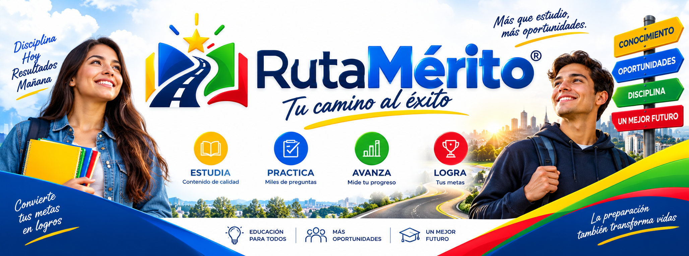

Soluciones digitales
Diseñamos y desarrollamos herramientas digitales para necesidades específicas, cuidando tanto la función como la forma en que las personas las utilizan.

EDTECH · ECOSISTEMA DIGITAL
Ruta al Mérito™
¡¡¡Tu camino al éxito!!!
Una presencia digital para productos, herramientas y experiencias que acompañan procesos reales de aprendizaje, preparación y acceso a oportunidades.
01 / QUIÉNES SOMOS
ANHETech ERP™ desarrolla soluciones, herramientas y experiencias para acompañar distintos procesos de aprendizaje y preparación.
El trabajo combina desarrollo de productos digitales, organización de información, experiencias de usuario y herramientas que buscan facilitar procesos concretos. Cada iniciativa parte de una necesidad reconocible y se construye con atención al contexto, claridad en el uso y disposición para aprender durante el camino.
02 / QUÉ HACEMOS
Las áreas se conectan para convertir una idea en una experiencia clara, útil y capaz de evolucionar.
Diseñamos y desarrollamos herramientas digitales para necesidades específicas, cuidando tanto la función como la forma en que las personas las utilizan.
Construimos productos que organizan contenidos, recorridos y acciones para que un proceso de preparación pueda sentirse más claro y manejable.
Convertimos conocimiento y práctica en experiencias que ayudan a estudiar, ejercitar competencias y reconocer oportunidades de mejora.
Trabajamos la estructura de la información y la experiencia de usuario para reducir fricciones y acompañar decisiones con mayor contexto.
Exploramos ideas, prototipos y alternativas antes de consolidar un producto, aprendiendo de las pruebas y de las preguntas que aparecen.
También desarrollamos iniciativas tecnológicas independientes cuando requieren una mirada, un ritmo o una finalidad distinta al núcleo educativo.
03 / RUTAMÉRITO™
Diferentes caminos. Una visión: aprender, prepararse y avanzar con herramientas pensadas para cada finalidad.
RutaMérito™ es un ecosistema de productos y proyectos orientados a acompañar diferentes procesos de aprendizaje, preparación y acceso a oportunidades. Cada ruta tiene una finalidad específica; no pretende sustituir a las instituciones o evaluaciones a las que hace referencia, sino ofrecer experiencias y herramientas de apoyo que puedan crecer con las necesidades de quienes las utilizan.
Una ruta orientada a acompañar la preparación para concursos de empleo público en Colombia, con herramientas y contenidos organizados alrededor de ese proceso.
Una aplicación independiente para acompañar la preparación y la práctica de quienes se enfrentan a las pruebas Saber 11, con un recorrido de estudio claro y progresivo.
Un proyecto orientado a desarrollar una experiencia de preparación y práctica para fortalecer competencias relacionadas con las pruebas Saber Pro.
Un proyecto orientado a desarrollar herramientas de preparación y aprendizaje relacionadas con las evaluaciones PISA, siempre desde una experiencia comprensible.
Un proyecto orientado a otras evaluaciones educativas y experiencias de preparación para pruebas Saber, con espacio para definir su alcance progresivamente.
04 / NUESTRA FILOSOFÍA
No desarrollamos únicamente porque algo sea posible. Primero buscamos entender si puede resolver una necesidad, facilitar un proceso o abrir una oportunidad para alguien. Esa pregunta orienta las decisiones pequeñas y grandes de cada proyecto.
Por eso valoramos la utilidad, la responsabilidad, el aprendizaje continuo, la accesibilidad y el trabajo constante. La innovación no es un gesto aislado: es la capacidad de observar, probar, corregir y seguir construyendo con una visión de futuro realista.
05 / CÓMO TRABAJAMOS
Los proyectos evolucionan mediante ciclos de trabajo, pruebas, correcciones y aprendizaje. No todo se define de una vez.
Identificamos una necesidad, una pregunta o una oportunidad concreta que merezca ser explorada.
Ordenamos el contexto, las personas involucradas y el alcance posible antes de decidir una solución.
Construimos la estructura, el recorrido y las decisiones de experiencia que harán comprensible el producto.
Convertimos esa definición en software y herramientas funcionales, manteniendo atención al detalle.
Revisamos lo que funciona, detectamos fricciones y corregimos lo necesario antes de avanzar.
Aprendemos del uso y de nuevas necesidades para mejorar el producto de manera progresiva.
06 / TECNOLOGÍA E INNOVACIÓN
Evaluamos plataformas, herramientas y tecnologías según las necesidades de cada proyecto. La elección técnica importa, pero importa más que la experiencia final sea clara, mantenible y útil.
El trabajo puede incluir desarrollo de software, automatización, experiencias digitales, análisis de información, infraestructura tecnológica, herramientas educativas y prototipado. La inteligencia artificial también puede ser pertinente cuando aporta valor real y se integra de forma responsable; no se presenta como solución automática para todo.
Proyecto tecnológico independiente orientado a explorar oportunidades legítimas relacionadas con computación y tecnología aplicada al ecosistema cripto, inicialmente para PC. Está claramente separado de los productos educativos de RutaMérito™.
07 / NUESTRA HISTORIA
Una construcción progresiva, con aprendizaje y trabajo detrás de cada nueva etapa.
Origen
ANHETech ERP™ nace a partir de una iniciativa familiar orientada a encontrar soluciones prácticas para necesidades tecnológicas de empresas y organizaciones. En esta etapa, la cercanía con los problemas cotidianos fue el punto de partida.
Desarrollo
Con el tiempo, la iniciativa fue evolucionando hacia proyectos tecnológicos, herramientas digitales y productos con una finalidad concreta. Cada experiencia aportó preguntas, decisiones y aprendizajes para el siguiente paso.
Ecosistema
RutaMérito™ reúne productos y proyectos orientados a aprendizaje, preparación y oportunidades. Su historia continúa construyéndose de manera progresiva, sin inventar hitos ni prometer más de lo que cada iniciativa puede sostener.
MIRAMOS HACIA ADELANTE
La visión es continuar desarrollando productos y soluciones digitales, explorar nuevas tecnologías y construir herramientas que puedan crecer con las necesidades de las personas y organizaciones. Queremos avanzar con ambición, pero también con criterio: cada nueva propuesta debe tener un propósito entendible y una forma responsable de evolucionar.
09 / PARA SEGUIR AVANZANDO
Ese es el sentido de Ruta al Mérito™: construir caminos que ayuden a aprender, prepararse y avanzar, sin perder de vista a las personas que les dan significado.
¡¡¡Tu camino al éxito!!!
10 / IDENTIDAD
Los nombres, denominaciones, combinaciones distintivas, elementos gráficos, contenidos y demás elementos identificativos asociados a RutaMérito™ se encuentran reservados en los términos que resulten aplicables.
Esto comprende, según corresponda, RutaMérito™, Ruta al Mérito™, Ruta al Empleo Público™, Ruta al Saber 11™, Ruta al Saber Pro™, Ruta a PISA™, Ruta a Evaluar para Avanzar™, ANHETech Crypto Node™, sus logotipos, identidad visual, diseños, interfaces, contenidos, software, código, documentación y materiales originales.
Su publicación no constituye autorización para su apropiación, reproducción, utilización, registro, explotación comercial o presentación como propios cuando ello vulnere los derechos aplicables o genere confusión sobre su origen, afiliación, autorización, patrocinio o representación.
Consultar política de propiedad intelectual ↗11 / CONTACTO
Estamos construyendo proyectos que acercan la tecnología a distintas necesidades de aprendizaje, preparación y desarrollo de nuevas oportunidades.
Si quieres conocer más sobre RutaMérito™, alguno de nuestros proyectos o explorar una posible colaboración, puedes comunicarte directamente con nosotros. Elegimos canales sencillos para que la conversación pueda comenzar de forma clara y cercana.